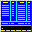

Bookmark Commander Help
The Bookmark Commander is a bookmark manager for Chrome bookmarks. Most of its features are borrowed from Midnight Commander. The screen of the Bookmark Commander is divided into four parts. Almost all of the screen space is taken up by two bookmark panels. The bottom line shows the function key labels. The topmost line is the menu bar line. The Bookmark Commander provides two views of your Chrome bookmarks at the same time. One of the panels is the current panel (a teal selection bar will signal which panel is active), almost all operations take place on the current panel. Some bookmarks operations like Rename and Copy by default use the directory of the unselected panel as a destination. One of the differences with Midnight Commander is that copying and moving book marks is instantaneous, there is no opportunity to rename the bookmark. That's why all bookmark folders will be always be copied/moved recursively. This is a list of the keys that work in Bookmark Commander : Down : move selection bar one spot lower Up : move selection bar one spot higher Tab : change panel F1 : help F5 : copy F6 : move F7 : create bookmark folder F8 : delete F9 : open top menu F10 : close Bookmark Commander + : move selected bookmark higher - : move selected bookmark lower For Macs: To press F9 hit 'Esc', then '9'. To press F10 hit 'Esc', then '0'. WARNING: there is no undo, with great powers comes great sorrow. You can start up the Bookmark Commander by hitting the  icon on the top right side of Chrome.